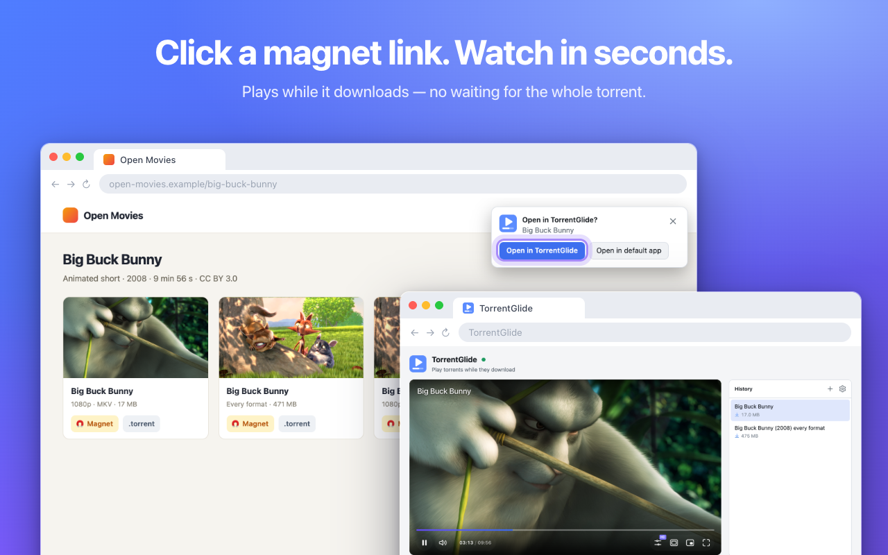
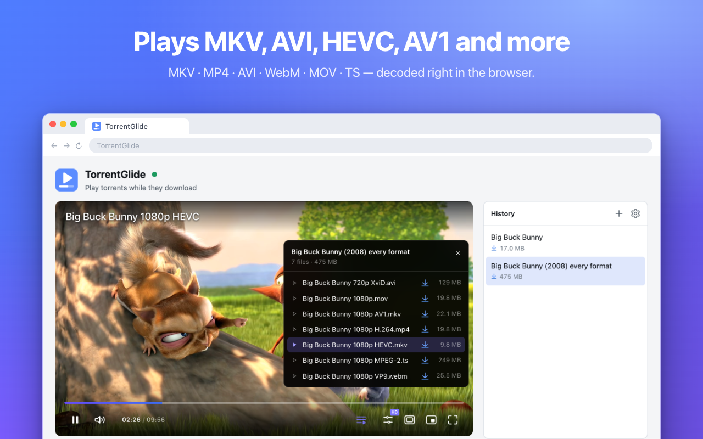

Reproduza torrents no seu navegador enquanto são baixados
Clique em um link magnet ou .torrent e comece a assistir em segundos. MKV, HEVC e subtítulos incluídos. Sem conta, nada enviado: o torrent roda no seu próprio computador.
Todas as descargas
Como funciona
Ela captura os links de torrents
Clique em um link magnet ou .torrent em qualquer site e escolha "Abrir no TorrentGlide", ou deixe o navegador tratar como de costume.
Seu computador baixa
O serviço de torrent, o gratuito e de código aberto rqbit, junta-se à rede no seu computador e obtém primeiro as peças abaixo da posição de reprodução.
Você assiste na hora
O reprodutor decodifica MKV, HEVC, AVI e mais no navegador, com subtítulos e packs de temporada. Avançe sem esperar o resto.
Capturas de tela




Privado por design
Sem conta, sem servidor no meio, sem rastreamento. A extensão só fala com o serviço de torrent no seu próprio computador, e esta página não tem análise nem cookies.